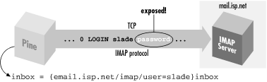
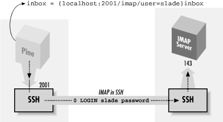
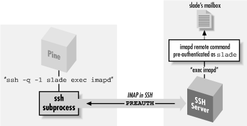

|  |
11.3. Pine, IMAP, and SSH
Pine is a popular, Unix-based email program from the University of Washington (http://www.washington.edu/pine/). In addition to handling mail stored and delivered in local files, Pine also supports IMAP[136] for accessing remote mailboxes and SMTP[137] for posting mail.[136]Internet Message Access Protocol, RFC-2060.
[137]Simple Mail Transfer Protocol, RFC-821.In this case study, we integrate Pine and SSH to solve two common problems:
- IMAP authentication
- In many cases, IMAP permits a password to be sent in the clear over the network. We discuss how to protect your password using SSH, but (surprisingly) not by port forwarding.
- Restricted mail relaying
- Many ISPs permit their mail and news servers to be accessed only by their customers. In some circumstances, this restriction may prevent you from legitimately relaying mail through your ISP. Once again, SSH comes to the rescue.
11.3.1. Securing IMAP Authentication
Like SSH, IMAP is a client/server protocol. Your email program (e.g., Pine) is the client, and an IMAP server process (e.g., imapd ) runs on a remote machine, the IMAP host, to control access to your remote mailbox. Also like SSH, IMAP generally requires you to authenticate before accessing your mailbox, typically by password. Unfortunately, in many cases this password is sent to the IMAP host in the clear over the network; this represents a security risk (see Figure 11-8).[138][138]IMAP does support more secure methods of authentication, but they aren't widely deployed.

Figure 11-8. A normal IMAP connection
If you have an account on the IMAP host, and if it is running an SSH server, you can protect your password. Because IMAP is a TCP/IP-based protocol, one approach is to use SSH port forwarding between the machine running Pine and the IMAP host (see Figure 11-9). [Section 9.2.1, "Local Forwarding"]
Figure 11-9. Forwarding an IMAP connection
However, this technique has two drawbacks:- Security risk
- On a multiuser machine, any other user can connect to your forwarded port. [Section 9.2.4.3, "Listening on ("binding") an interface"] If you use forwarding only to protect your password, this isn't a big deal, since at worst, an interloper could access a separate connection to the IMAP server having nothing to do with your connection. On the other hand, if port forwarding is permitting you to access an IMAP server behind a firewall, an interloper can breach the firewall by hijacking your forwarded port, a more serious security risk.
- Inconvenience
- In this setup, you must authenticate twice: first to the SSH server on the IMAP host (to connect and to create the tunnel) and then to the IMAP server by password (to access your mailbox). This is redundant and annoying.
11.3.1.1. Pine and preauthenticated IMAP
The IMAP protocol defines two modes in which an IMAP server can start: normal and preauthenticated (see Figure 11-10). Normally, the server runs with special privileges to access any user's mailbox, and hence it requires authentication from the client. Unix-based IMAP servers enter this mode when started as root.
Figure 11-10. Pine/IMAP over SSH, preauthenticated
Here's a sample session that invokes an IMAP server, imapd, through inetd so it runs as root:Alternatively, in preauthenticated mode, the IMAP server assumes that authentication has already been done by the program that started the server and that it already has the necessary rights to access the user's mailbox. If you invoke imapd on the command line under a nonroot uid, imapd assumes you have already authenticated and opens your email inbox. You can then type IMAP commands and access your mailbox without authentication:server% telnet localhost imap * OK localhost IMAP4rev1 v12.261 server ready 0 login res password' 1 select inbox * 3 EXISTS * 0 RECENT * OK [UIDVALIDITY 964209649] UID validity status * OK [UIDNEXT 4] Predicted next UID * FLAGS (\Answered \Flagged \Deleted \Draft \Seen) * OK [PERMANENTFLAGS (\* \Answered \Flagged \Deleted \Draft \Seen)] Permanent flags 1 OK [READ-WRITE] SELECT completed 2 logout * BYE imap.example.com IMAP4rev1 server terminating connection 2 OK LOGOUT completed
Notice the PREAUTH response at the beginning of the session, indicating pre-authenticated mode. It is followed by the command select inbox, which causes the IMAP server implicitly to open the inbox of the current user without demanding authentication. Now, how does all this relate to Pine? When instructed to access an IMAP mailbox, Pine first attempts to log into the IMAP host using rsh and to run a preauthenticated instance of imapd directly. If this succeeds, Pine then converses with the IMAP server over the pipe to rsh and has automatic access to the user's remote inbox without further authentication. This is a good idea and very convenient; the only problem is that rsh is very insecure. However, you can make Pine use SSH instead.server% /usr/local/sbin/imapd * PREAUTH imap.example.com IMAP4rev1 v12.261 server ready 0 select inbox * 3 EXISTS * 0 RECENT * OK [UIDVALIDITY 964209649] UID validity status * OK [UIDNEXT 4] Predicted next UID * FLAGS (\Answered \Flagged \Deleted \Draft \Seen) * OK [PERMANENTFLAGS (\* \Answered \Flagged \Deleted \Draft \Seen)] Permanent flags 0 OK [READ-WRITE] SELECT completed 1 logout * BYE imap.example.com IMAP4rev1 server terminating connection 1 OK LOGOUT completed
11.3.1.2. Making Pine use SSH instead of rsh
Pine's rsh feature is controlled by three configuration variables in the ~/.pinerc file: rsh-path, rsh-command, and rsh-open-timeout. rsh-path stores the program name for opening a Unix remote shell connection. Normally it is the fully qualified path to the rsh executable (e.g., /usr/ucb/rsh). To make Pine use SSH, instruct it to use the ssh client rather than rsh, setting rsh-path to the location of the SSH client:rsh-command represents the Unix command line for opening the remote shell connection: in this case, the IMAP connection to the IMAP host. The value is a printf-style format string with four "%s" conversion specifications that are automatically filled in at runtime. From first to last, these four specifications stand for:rsh-path=/usr/local/bin/ssh
- The value of rsh-path
- The remote hostname
- The username for accessing your remote mailbox
The connection method; in this case, "imap"
which can instantiate to:"%s %s -l %s exec /etc/r%sd"
To make this work properly with ssh, modify the default format string slightly, adding the -q option for quiet mode:/usr/ucb/rsh imap.example.com -l smith exec /etc/rimapd
This instantiates to:rsh-command="%s %s -q -l %s exec /etc/r%sd"
The -q option is necessary so that ssh doesn't emit diagnostic messages that may confuse Pine, such as:/usr/local/bin/ssh imap.example.com -w -l smith exec /etc/rimapd
Pine otherwise tries to interpret these as part of the IMAP protocol. The default IMAP server location of /etc/r %sd becomes /etc/rimapd. The third variable, rsh-open-timeout, sets the number of seconds for Pine to open the remote shell connection. Leave this setting at its default value, 15, but any integer greater than or equal to 5 is permissible. So finally, the Pine configuration is:Warning: Kerberos authentication disabled in SUID client. fwd connect from localhost to local port sshdfwd-2001
rsh-path=/usr/local/bin/ssh rsh-command="%s %s -q -l %s exec /etc/r%sd" rsh-open-timeout=
Generally, you want to use an SSH authentication method that doesn't require typing a password or passphrase, such as trusted-host or public-key with an agent. SSH is run behind the scenes by Pine and doesn't have access to the terminal to prompt you. If you're running the X Window System, ssh can pop up an X widget instead to get input, ssh-askpass, but you probably don't want that either. Pine may make several separate IMAP connections in the course of reading your mail, even if it's all on the same server. This is just how the IMAP protocol works. With the previous settings in your ~/.pinerc file and the right kind of SSH authentication in place, you're ready to try Pine over SSH. Just start Pine and open your remote mailbox; if all goes well, it will open without prompting for a password.
11.3.2. Mail Relaying and News Access
Pine uses IMAP to read mail but not to send it. For that, it can either call a local program (such as sendmail ) or use an SMTP server. Pine can also be a newsreader and use NNTP (the Network News Transfer Protocol, RFC-977) to contact a news server. An ISP commonly provides NNTP and SMTP servers for its customers when connected to the ISP's network. However, for security and usage control reasons, the ISP generally restricts this access to connections originating within its own network (including its own dial-up connections). In other words, if you're connected to the Internet from elsewhere and try to use your ISP's services, the attempt will probably fail. Access to your usual servers can be blocked by a firewall, or if not, your outgoing mail can bounce with a message about "no relaying," and the news server rejects you with a message about "unauthorized use." You are authorized to use the services, of course, so what do you do? Use SSH port forwarding! By forwarding your SMTP and NNTP connections over an SSH session to a machine inside the ISP's network, your connections appear to come from that machine, thus bypassing the address-based restrictions. You can use separate SSH commands to forward each port:Alternatively, if you have a shell account on one of the ISP's machines running SSH but can't log into the mail or news servers directly, do this:$ ssh -L2025:localhost:25 smtp-server ... $ ssh -L2119:localhost:119 nntp-server ...
This is an off-host forwarding, and thus the last leg of the forwarded path isn't protected by SSH. Section 9.2.4, "Forwarding Off-Host" But since the reason for this forwarding isn't so much protection as it is bypassing the source-address restriction, that's OK. Your mail messages and news postings are going to be transferred insecurely once you drop them off, anyway. (If you want security for them, you need to sign or encrypt them separately, e.g., with PGP or S/MIME.) In any case, now configure Pine to use the forwarded ports by setting the smtp-server and nntp-server configuration options in your ~/.pinerc file:$ ssh -L2025:smtp-server:25 -L2119:nntp-server:119 shell-server ...
smtp-server=localhost:2025 nntp-server=localhost:2119
11.3.3. Using a Connection Script
The Pine configuration option rsh-path can point not only to rsh or ssh, but also to any other program: most usefully, a script you've written providing any needed customizations. There are a couple of reasons why you might need to do this:- The rsh-path setting is global, applying to every remote mailbox. That is, Pine tries to use this style of access either for every remote mailbox or for none. If you have multiple remote mailboxes but only some of them are accessible via SSH/imapd, this leads to annoyance. Pine falls back to a direct TCP connection if SSH fails to get an IMAP connection, but you have to wait for it to fail. If the server in question is behind a firewall silently blocking the SSH port, this can be a lengthy delay.
- The "multiple forwarding" problem. You might think to add
forwarding options to Pine's
rsh-path command, rather than run a
separate SSH session to get them:
This solution can get tricky if you're accessing multiple mailboxes, not only because the command is run for every mailbox, but also because it may run multiple times concurrently. Once the forwarded ports are already established, subsequent invocations will fail. More specifically, SSH1 and OpenSSH will fail altogether; SSH2 issues a warning but continues.rsh-command="%s %s -q -l %s -L2025:localhost:25 exec /etc/r%sd"
Here is a sample implementation of the script, using Perl:rsh-path=/path/to/script rsh-command=%s %s %s %s
#!/usr/bin/perl
# TCP/IP module
use IO::Socket;
# get the arguments passed by Pine
($server,$remoteuser,$method) = @ARGV;
die "usage: $0 <server> <remote user> <method>"
unless scalar @ARGV == 3;
if ($server eq "mail.isp.com") {
# on this machine, I had to compile my own imapd
$command = 'cd ~/bin; exec imapd';
} else if ($server eq "clueful.isp.com") {
# on this box, the POP and IMAP servers are in the expected place
$command = 'exec /etc/r${method}d';
} else {
# signal Pine to move on
exit 1;
}
$smtp = 25; # well-known port for SMTP
$nntp = 119; # and NNTP
$smtp_proxy = 2025; # local port for forwarding SMTP connection
$nntp_proxy = 2119; # local port for forwarding NNTP connection
$ssh = '/usr/local/bin/ssh1'; # which SSH do I want to run?
# Try to connect to the forwarded SMTP port; only do forwarding if the
# attempt fails. Also, do forwarding only if we're not in the domain
# "home.net". The idea is that that's your home network, where you have
# direct access to your ISP's mail and news servers.
$do_forwards = !defined($socket = IO::Socket::INET->new("localhost:$smtp_proxy"))
&& `domainname` !~ /HOME.NET/i;
# be tidy
close $socket if $socket;
# Set the forwarding options if we're doing forwarding. This assumes that
# the mail and news servers are called "mail" and "news", respectively, in
# your ISP's domain; a common and useful convention.
@forward = ('-L',"$smtp_proxy:mail:$smtp",'-L',"$nntp_proxy:news:$nntp");
if ($do_forwards);
# prepare the arguments to ssh
@ssh_argv = ('-a','-x','-q',@forward,"$remoteuser\@$server");
# run ssh
exec $ssh, @ssh_argv, $command; |  | |
| 11.2. FTP Forwarding |  | 11.4. Kerberos and SSH |